pacman::p_load(sf, spatstat, tmap, tidyverse)Hands-on Exercise 3: Point Pattern Analysis
Getting started
Ex01 and Ex02 were both basically about mapping — where things are, how to make the map look decent. This one’s different: are these points actually clustered, or does it just look that way to the eye? Reusing the same two files from Ex01, PreSchoolsLocation.geojson and MasterPlan2014SubzoneBoundaryNoSea.geojson, except the subzone file isn’t for drawing an administrative map this time, it’s just standing in for “the boundary of Singapore.”
New package: spatstat. It doesn’t understand sf objects at all, it wants its own format called ppp. So a good chunk of what follows is just converting things into a shape spatstat will actually accept.
Importing and preparing the data
preschool <- st_read("data/geospatial/PreSchoolsLocation.geojson") %>%
st_transform(crs = 3414)Reading layer `PreSchoolsLocation' from data source
`C:\Users\User\Desktop\Geospatial\Hands-on_Ex\Hands-on_Ex03\data\geospatial\PreSchoolsLocation.geojson'
using driver `GeoJSON'
Simple feature collection with 2290 features and 2 fields
Geometry type: POINT
Dimension: XYZ
Bounding box: xmin: 103.6878 ymin: 1.247759 xmax: 103.9897 ymax: 1.462134
z_range: zmin: 0 zmax: 0
Geodetic CRS: WGS 84mpsz <- st_read("data/geospatial/MasterPlan2014SubzoneBoundaryNoSea.geojson") %>%
st_transform(crs = 3414)Reading layer `MP14_SUBZONE_NO_SEA_PL' from data source
`C:\Users\User\Desktop\Geospatial\Hands-on_Ex\Hands-on_Ex03\data\geospatial\MasterPlan2014SubzoneBoundaryNoSea.geojson'
using driver `GeoJSON'
Simple feature collection with 323 features and 13 fields
Geometry type: MULTIPOLYGON
Dimension: XY
Bounding box: xmin: 103.6057 ymin: 1.158699 xmax: 104.0885 ymax: 1.470775
Geodetic CRS: WGS 84The textbook version uses a proper coastline shapefile as the study area. Don’t have that file, so instead all 323 subzone polygons get dissolved into one shape with st_union() — same land area in the end, just built a different way.
sg_sf <- mpsz %>%
st_union() %>%
st_sf()
plot(st_geometry(sg_sf))
Converting to spatstat’s ppp format
spatstat wants two things: a ppp for the points, an owin for the window they live in. Sounds simple enough, except the dissolved outline from earlier still carries every single vertex from all 323 original polygons — thousands of points just to describe a coastline. Didn’t think this would matter until later steps just sat there not finishing. Simplifying the outline first with st_simplify() (20m tolerance, invisible at Singapore’s scale) fixed it — several of the point pattern functions later do real geometric work against the window boundary, and an unnecessarily detailed polygon makes all of that painfully slow.
sg_sf_simplified <- sg_sf %>%
st_simplify(dTolerance = 20, preserveTopology = TRUE)
sg_owin <- as.owin(sg_sf_simplified)
preschool_ppp <- as.ppp(st_coordinates(preschool), W = sg_owin)
plot(preschool_ppp)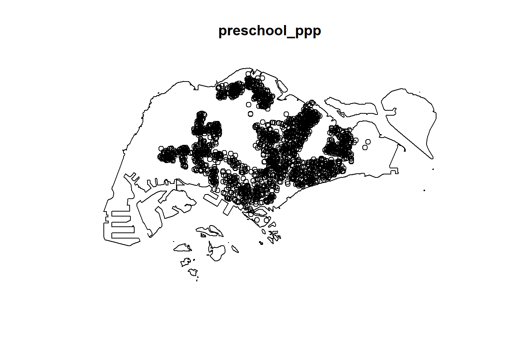
summary(preschool_ppp)Marked planar point pattern: 2290 points
Average intensity 2.929995e-06 points per square unit
*Pattern contains duplicated points*
Coordinates are given to 11 decimal places
marks are numeric, of type 'double'
Summary:
Min. 1st Qu. Median Mean 3rd Qu. Max.
0 0 0 0 0 0
Window: polygonal boundary
81 separate polygons (36 holes)
vertices area relative.area
polygon 1 1058 6.97809e+08 8.93e-01
polygon 2 (hole) 3 -2.21090e+00 -2.83e-09
polygon 3 20 1.58880e+06 2.03e-03
polygon 4 (hole) 3 -2.05920e-03 -2.63e-12
polygon 5 (hole) 3 -8.83647e-03 -1.13e-11
polygon 6 86 5.40038e+07 6.91e-02
polygon 7 4 1.56447e+03 2.00e-06
polygon 8 4 1.32396e+04 1.69e-05
polygon 9 107 1.28581e+07 1.65e-02
polygon 10 (hole) 4 -4.21076e+04 -5.39e-05
polygon 11 (hole) 6 -5.29739e+04 -6.78e-05
polygon 12 (hole) 3 -3.41405e-01 -4.37e-10
polygon 13 (hole) 3 -2.89050e-05 -3.70e-14
polygon 14 14 3.21824e+05 4.12e-04
polygon 15 6 2.44596e+04 3.13e-05
polygon 16 (hole) 3 -2.83151e-01 -3.62e-10
polygon 17 (hole) 3 -1.83869e+02 -2.35e-07
polygon 18 4 6.61127e+03 8.46e-06
polygon 19 (hole) 3 -1.68290e-04 -2.15e-13
polygon 20 (hole) 3 -6.78062e+03 -8.68e-06
polygon 21 (hole) 3 -1.97231e-02 -2.52e-11
polygon 22 (hole) 3 -2.18000e-06 -2.79e-15
polygon 23 (hole) 3 -3.65501e-03 -4.68e-12
polygon 24 (hole) 3 -4.95057e-02 -6.33e-11
polygon 25 (hole) 3 -3.99521e-02 -5.11e-11
polygon 26 (hole) 3 -6.62377e-01 -8.47e-10
polygon 27 (hole) 3 -2.09065e-03 -2.67e-12
polygon 28 5 1.11405e+04 1.43e-05
polygon 29 (hole) 4 -1.16055e+03 -1.48e-06
polygon 30 (hole) 5 -1.30461e+03 -1.67e-06
polygon 31 (hole) 3 -2.97167e+00 -3.80e-09
polygon 32 (hole) 3 -7.16573e+01 -9.17e-08
polygon 33 (hole) 3 -1.34966e+01 -1.73e-08
polygon 34 6 1.22983e+04 1.57e-05
polygon 35 (hole) 5 -5.84401e+03 -7.48e-06
polygon 36 (hole) 3 -1.40769e-01 -1.80e-10
polygon 37 (hole) 3 -6.29443e+01 -8.05e-08
polygon 38 3 1.44186e+03 1.84e-06
polygon 39 4 1.73538e+03 2.22e-06
polygon 40 4 1.94155e+03 2.48e-06
polygon 41 5 1.48721e+04 1.90e-05
polygon 42 7 3.94067e+03 5.04e-06
polygon 43 17 4.63931e+05 5.94e-04
polygon 44 7 2.10061e+03 2.69e-06
polygon 45 35 1.50453e+06 1.93e-03
polygon 46 9 4.54780e+03 5.82e-06
polygon 47 3 1.93651e+02 2.48e-07
polygon 48 27 2.05319e+06 2.63e-03
polygon 49 12 2.57116e+05 3.29e-04
polygon 50 106 1.28253e+06 1.64e-03
polygon 51 (hole) 3 -1.16959e-03 -1.50e-12
polygon 52 19 8.91354e+04 1.14e-04
polygon 53 15 4.16491e+04 5.33e-05
polygon 54 35 9.49082e+04 1.21e-04
polygon 55 4 2.20102e+02 2.82e-07
polygon 56 (hole) 3 -3.23310e-04 -4.14e-13
polygon 57 3 1.35651e+02 1.74e-07
polygon 58 (hole) 3 -1.46474e-03 -1.87e-12
polygon 59 87 4.41693e+06 5.65e-03
polygon 60 3 4.24471e+03 5.43e-06
polygon 61 20 3.35901e+04 4.30e-05
polygon 62 (hole) 3 -1.98390e-03 -2.54e-12
polygon 63 (hole) 3 -5.57753e+01 -7.14e-08
polygon 64 4 3.89579e+03 4.98e-06
polygon 65 17 5.78827e+04 7.41e-05
polygon 66 (hole) 3 -5.12481e-03 -6.56e-12
polygon 67 (hole) 3 -8.75697e-03 -1.12e-11
polygon 68 (hole) 3 -1.96410e-03 -2.51e-12
polygon 69 (hole) 3 -5.55856e-03 -7.11e-12
polygon 70 43 2.08977e+06 2.67e-03
polygon 71 3 5.92356e+02 7.58e-07
polygon 72 11 4.60601e+05 5.89e-04
polygon 73 (hole) 3 -2.24561e+02 -2.87e-07
polygon 74 4 3.92233e+04 5.02e-05
polygon 75 56 1.10347e+06 1.41e-03
polygon 76 4 5.60245e+03 7.17e-06
polygon 77 6 2.70729e+04 3.46e-05
polygon 78 46 9.56262e+05 1.22e-03
polygon 79 4 3.67533e+03 4.70e-06
polygon 80 8 1.03630e+04 1.33e-05
polygon 81 3 4.73554e+01 6.06e-08
enclosing rectangle: [2667.65, 56391.13] x [15748.72, 50256.05] units
(53720 x 34510 units)
Window area = 781571000 square units
Fraction of frame area: 0.422Two preschools can land on the exact same coordinate if they share a building, and duplicate points break some of the tests below, so I checked before going further:
any(duplicated(preschool_ppp))[1] TRUETurned out to be TRUE here, so the duplicates get jittered apart with rjitter() — nudges them a tiny random distance so they’re not stacked exactly on top of each other:
preschool_ppp_jit <- rjitter(preschool_ppp, retry = TRUE, nsim = 1, drop = TRUE)
any(duplicated(preschool_ppp_jit))[1] FALSEPart 1 — First-order analysis: where are preschools concentrated?
First-order analysis is really just: where’s it denser, where’s it sparser. The tool is kernel density estimation (KDE) — each point gets smeared into a small “bump,” and stacking all the bumps together gives a continuous surface instead of a scatter of dots.
Fixed bandwidth
sigma sets how wide each bump is. Starting with a fixed number just to see what it looks like.
kde_fixed <- density(preschool_ppp_jit,
sigma = 500,
edge = TRUE,
kernel = "gaussian")
plot(kde_fixed, main = "Fixed bandwidth (sigma = 500m)")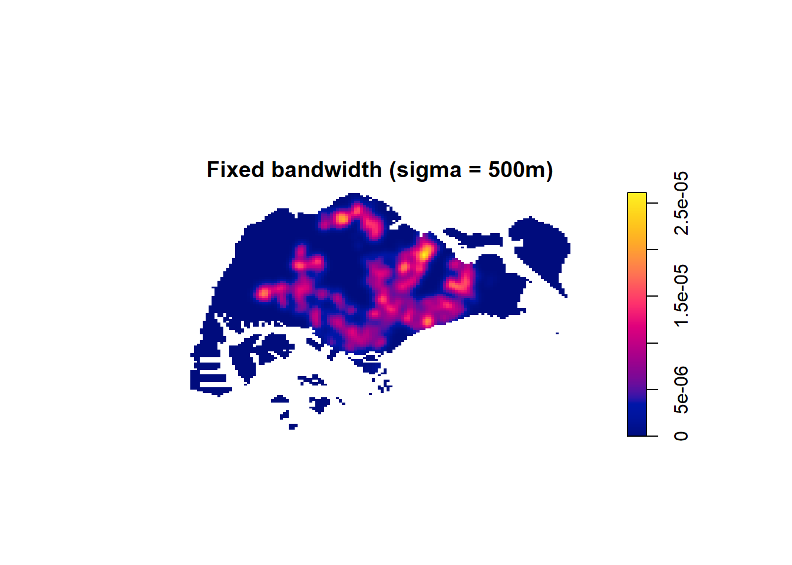
Automatic bandwidth selection
500 was picked out of thin air, honestly. spatstat has actual selectors that work out a bandwidth from the data instead of guessing:
bw.diggle(preschool_ppp_jit) sigma
320.7629 bw.CvL(preschool_ppp_jit) sigma
4068.381 bw.scott(preschool_ppp_jit) sigma.x sigma.y
2111.635 1347.439 bw.ppl(preschool_ppp_jit) sigma
301.3285 They don’t agree with each other, which makes sense once you notice they’re optimising for different things — bw.diggle leans toward picking up clusters, bw.CvL/bw.scott aim more for a smooth overall estimate. Plotting two of them side by side shows how much the bandwidth choice actually changes what you see:
kde_diggle <- density(preschool_ppp_jit, sigma = bw.diggle, edge = TRUE)
kde_ppl <- density(preschool_ppp_jit, sigma = bw.ppl, edge = TRUE)
par(mfrow = c(1, 2))
plot(kde_diggle, main = "bw.diggle")
plot(kde_ppl, main = "bw.ppl")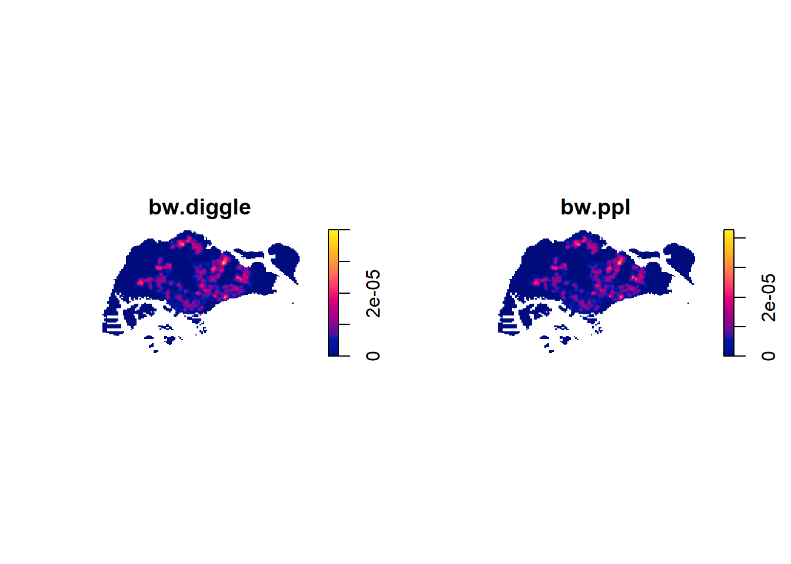
par(mfrow = c(1, 1))Clark-Evans test
KDE gives you a picture, not a number. Clark-Evans actually gives a ratio and a p-value — compares the real average nearest-neighbour distance to what you’d expect if the points were scattered completely at random (CSR). Ratio under 1 means more clustered than random, over 1 means more spread out than random.
clarkevans.test(preschool_ppp_jit,
correction = "none",
clipregion = sg_owin,
alternative = "clustered",
nsim = 99)
Clark-Evans test
No edge correction
Z-test
data: preschool_ppp_jit
R = 0.43224, p-value < 2.2e-16
alternative hypothesis: clustered (R < 1)Part 2 — Second-order analysis: is the clustering statistically real?
The KDE stuff above shows where it’s dense, but doesn’t really prove anything on its own — a cluster could just be noise. Second-order analysis instead looks at every pair of points and asks, at a given distance, is there more or less company than you’d expect from pure randomness?
Same recipe for all four functions below: compute the real statistic, simulate a bunch of random point patterns in the same window (Monte Carlo), and check whether the real line sits outside the band those random simulations produce.
G-function — nearest neighbour distance
G <- Gest(preschool_ppp_jit)
plot(G, main = "G-function")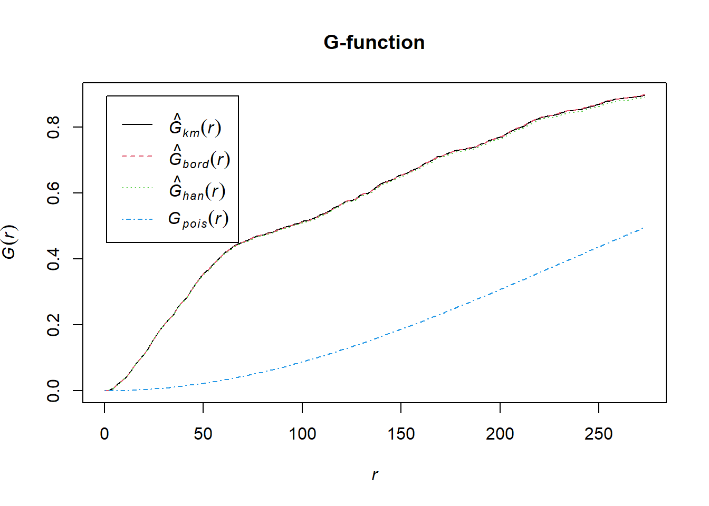
G.csr <- envelope(preschool_ppp_jit, Gest, nsim = 39)Generating 39 simulated realisations of CSR ...
1, 2, 3, 4, 5, 6, 7, 8, 9, 10, 11, 12, 13, 14, 15, 16, 17, 18, 19, 20,
21, 22, 23, 24, 25, 26, 27, 28, 29, 30, 31, 32, 33, 34, 35, 36, 37, 38,
39.
Done.plot(G.csr, main = "G-function vs CSR envelope")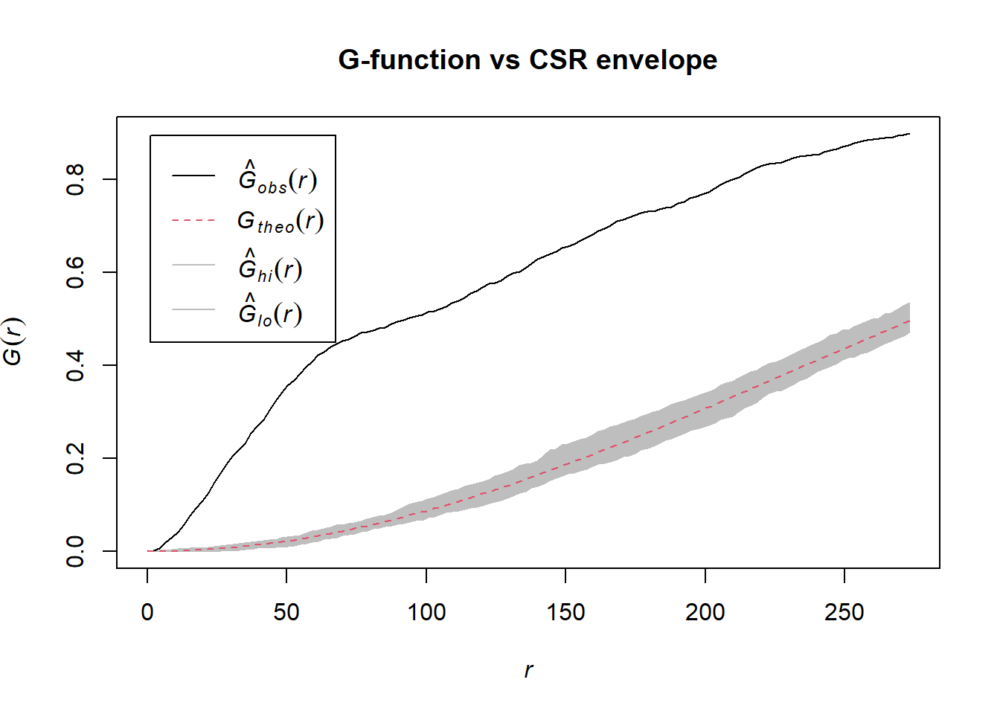
F-function — empty space distance
F <- Fest(preschool_ppp_jit)
plot(F, main = "F-function")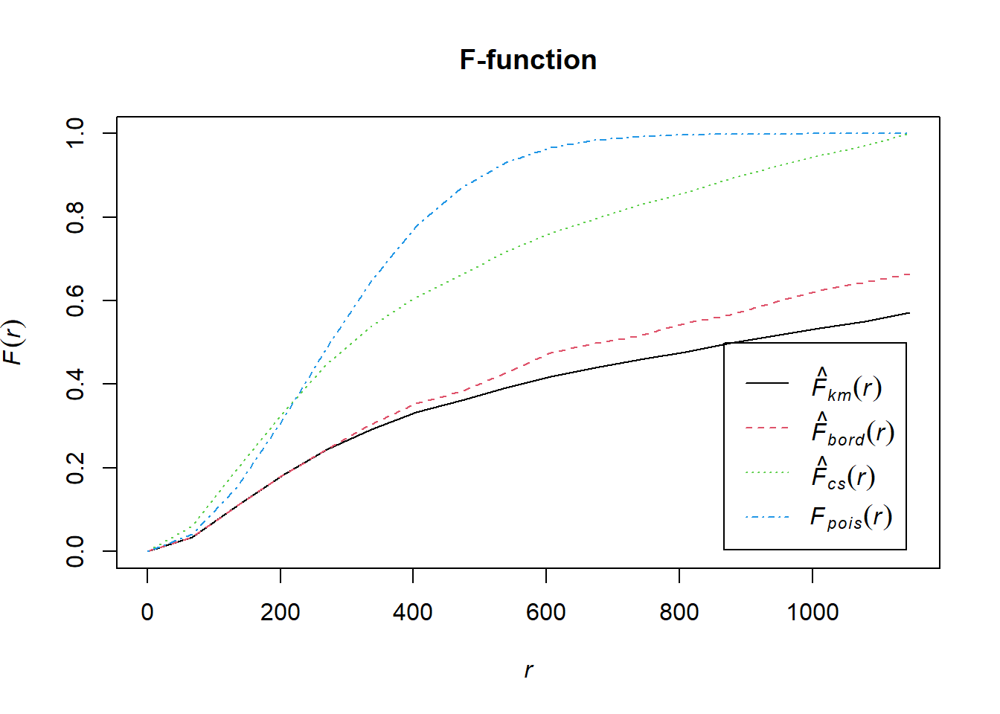
F.csr <- envelope(preschool_ppp_jit, Fest, nsim = 39)Generating 39 simulated realisations of CSR ...
1, 2, 3, 4, 5, 6, 7, 8, 9, 10, 11, 12, 13, 14, 15, 16, 17, 18, 19, 20,
21, 22, 23, 24, 25, 26, 27, 28, 29, 30, 31, 32, 33, 34, 35, 36, 37, 38,
39.
Done.plot(F.csr, main = "F-function vs CSR envelope")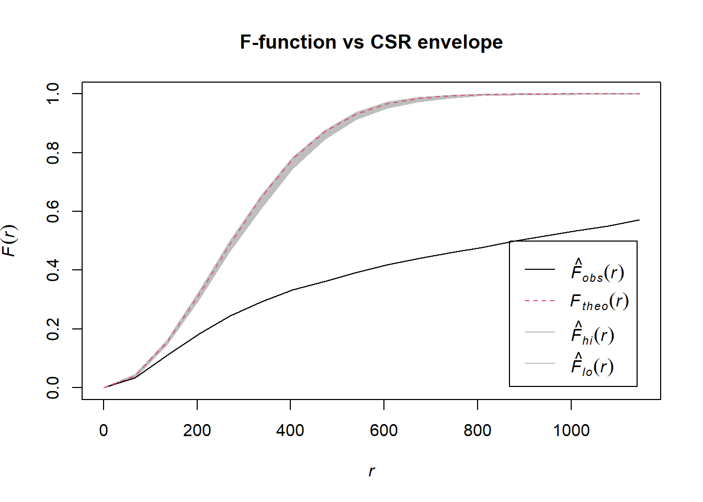
K-function — points within a given radius
This one actually got stuck the first time round. K-function checks every pair of points against every other, already heavier than G or F, and spatstat’s default edge correction (isotropic) does extra geometry against the window boundary on top of that — with Singapore’s mainland-plus-a-bunch-of-small-islands shape, it basically never finished. Switched to border correction instead: simpler, much faster, still a valid estimate.
K <- Kest(preschool_ppp_jit, correction = "border")
plot(K, . - r ~ r, main = "K-function")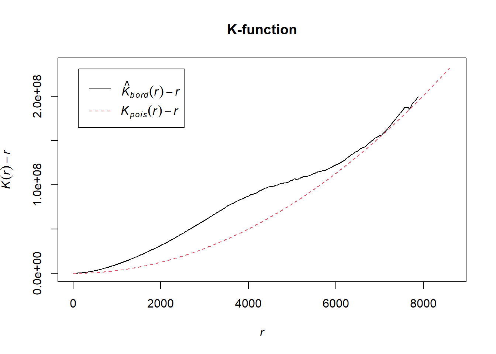
K.csr <- envelope(preschool_ppp_jit, Kest, nsim = 39, correction = "border")Generating 39 simulated realisations of CSR ...
1, 2, 3, 4, 5, 6, 7, 8, 9, 10, 11, 12, 13, 14, 15, 16, 17, 18, 19, 20,
21, 22, 23, 24, 25, 26, 27, 28, 29, 30, 31, 32, 33, 34, 35, 36, 37, 38,
39.
Done.plot(K.csr, . - r ~ r, main = "K-function vs CSR envelope")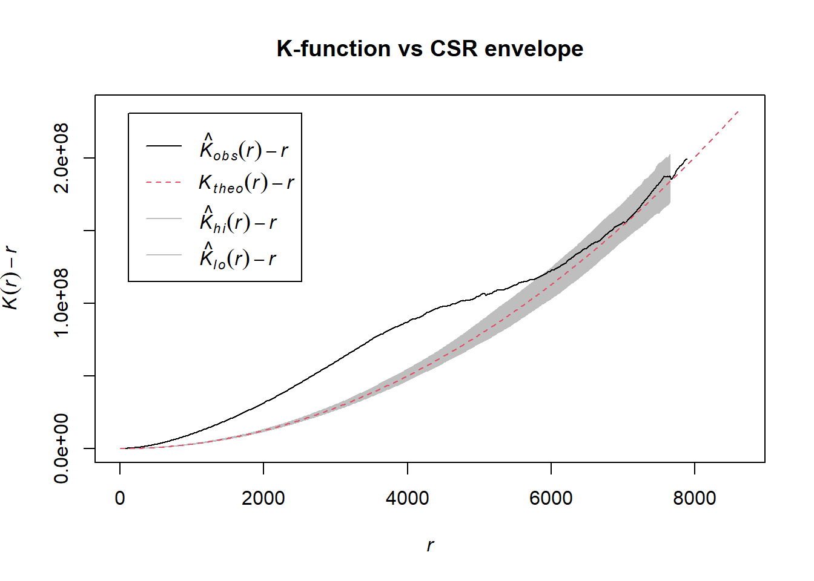
L-function — a rescaled, easier-to-read version of K
L <- Lest(preschool_ppp_jit, correction = "border")
plot(L, . - r ~ r, main = "L-function")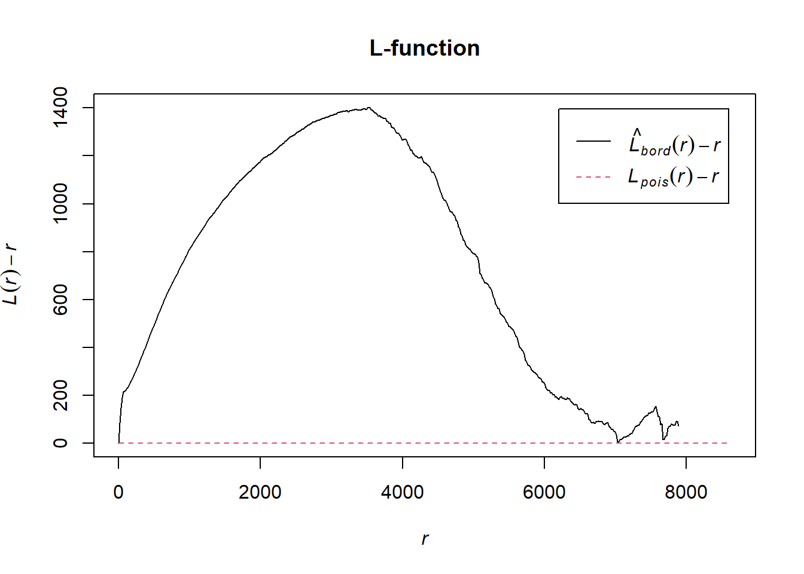
L.csr <- envelope(preschool_ppp_jit, Lest, nsim = 39, correction = "border")Generating 39 simulated realisations of CSR ...
1, 2, 3, 4, 5, 6, 7, 8, 9, 10, 11, 12, 13, 14, 15, 16, 17, 18, 19, 20,
21, 22, 23, 24, 25, 26, 27, 28, 29, 30, 31, 32, 33, 34, 35, 36, 37, 38,
39.
Done.plot(L.csr, . - r ~ r, main = "L-function vs CSR envelope")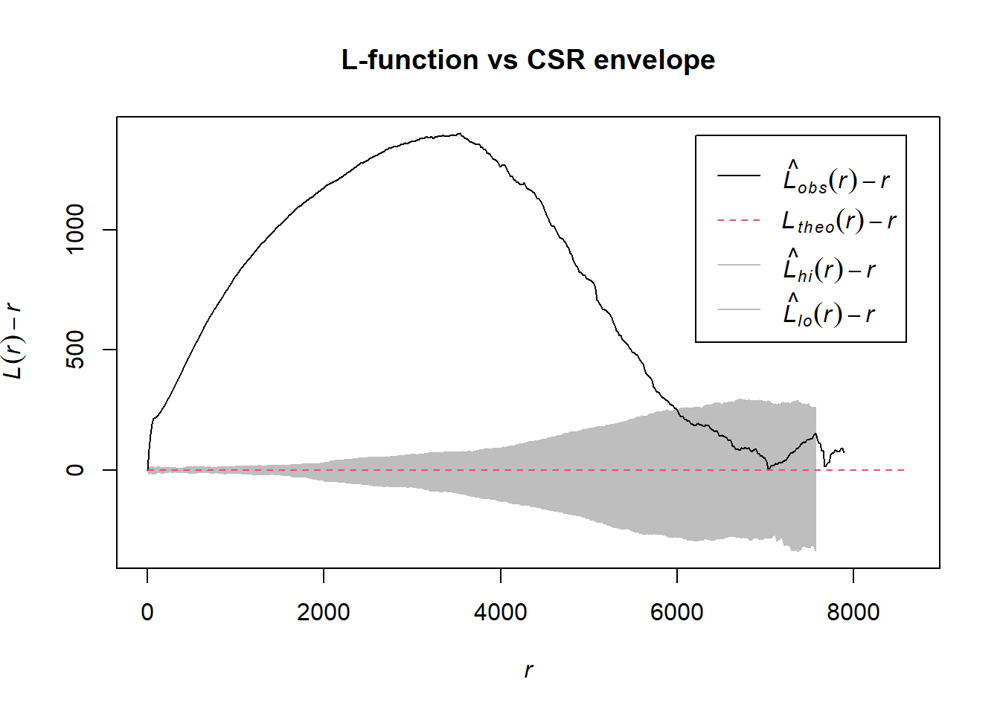
Reading the envelope plots
The grey band in each plot is the range you’d expect from 39 random simulations in the same window. Where the black (observed) line pokes above the band, points are clustering at that distance; where it dips below, they’re more spread out than random; where it just sits inside the band, can’t really tell the pattern apart from CSR at that scale.
Notes and open questions
This still isn’t the textbook’s actual dataset — it’s Ex01’s preschool and subzone files again, standing in for the childcare-centre data the chapter uses, and the study boundary is a dissolved subzone outline rather than the real coastline shapefile. Same substitution as before, just flagging it again here since it affects every result in this file.
Testing CSR against the whole island is a pretty blunt way to ask the question, too — preschools are obviously going to cluster wherever people actually live, so a chunk of what these tests are picking up is probably just population density, not anything specific to where a preschool gets built. Splitting this by planning area and re-running would be a better test of that, if there’s time before this needs to be handed in.